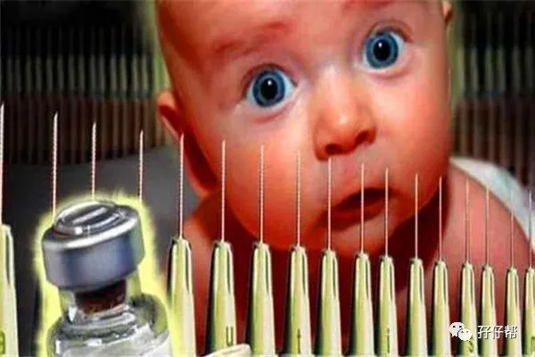
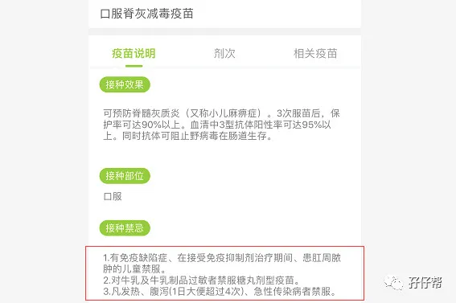
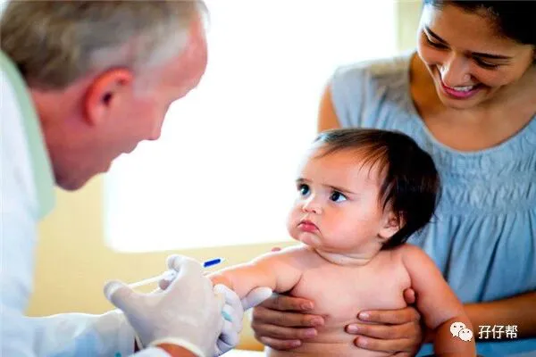

⬆⬆关注孖仔帮，与您分享双胞胎育儿经⬆⬆
文|圆圈妈 一个文思如尿崩的双胎妈妈
图|来自网络
🔴--01--🔴
收到喂养群一宝妈的咨询：两宝宝出生29天因肺炎住院，期间用了丙种球蛋白，后续打疫苗怎么办？据说使用丙种球蛋白后半年内不能打疫苗？
先来了解下丙种球蛋白：
丙种球蛋白（γ-globulin）原为免疫球蛋白（immuneg lobulobulin,Ig）的统称，是具有抗体活性，并能与相应抗原特异性结合的一类球蛋白。静脉用丙种球蛋白（IVIG）是从大量健康人混合血浆中分离提纯的，具有抗体活性，含有广谱抗细菌和抗病毒的IgG抗体。主要用于预防和治疗病毒性和细菌性感染性疾病,疗效较好，副作用小，在危重症的抢救中起着重要作用。
(来源：医学百科)
如果疫苗对丙球没有禁忌要求，那按照国家规定的接种计划即可。除了丙球，有些疫苗也对接种者的用药史，既往病史等有禁忌要求，如有惊厥史的人，半年内不能接种乙脑减毒活疫苗。
圆圆一岁半高热惊厥，满2岁后，医生才让接种乙脑。
因此，接孩子出院时，长点心眼，多问下医生后续接种疫苗的细节问题，比如有什么时间限制，隔半年还是三个月？只有医生清楚孩子在治疗过程发生了什么事，用了什么药。
一般医生都会在出院小结交代清楚，你仔细多问，心里也有谱。
如果忘记问了，又对寥寥几句的医嘱一肚子疑惑，眼看着规定打疫苗的时间马上来了该怎么办呢？别犹豫，带着孩子去社康或者防疫站找医生问清楚。
先跟医生说明孩子的大致情况，最直接的方式是，给医生看孩子出生时的住院记录和出院小结。
不要嫌麻烦，也不要怕尴尬，那是关系到孩子的健康安全问题，这个时候，请尽管厚着脸皮问。
有些医生可能没有耐心看， 如果你觉得医生没有重视你的问题，而你自己又很担心纠结，那就换个社康吧。
直到你确定医生确实是经过慎重的评估后同意孩子可以接种， 你才可以放心让孩子接种疫苗。
如果医生说不能接种，那听医生的吧，到时候记得补打即可。
🔴--02--🔴
你可能还会担心，万一期间，因为没有打疫苗染上疾病怎么办？
疫苗只是预防，并不是打疫苗之后就能终生对某疾病免疫，没打疫苗确实会增加染疾病的风险，但还是可控可防的，家长平时多注意，细心护理，一般都不会有大问题。
圆圈兄弟38天，因肺炎再次住进新生儿科出院后，即将要接种的是口服减毒减毒疫苗。
那是一种糖丸，口服，不用注射，我觉得挺安全的，马上放下警惕。
我没有经验，不知道要注意什么，也没有细看接种该疫苗的禁忌。当时社康很多人，医生忙得很，我也没有时间多问，觉得他们近期都没有感冒咳嗽发烧，想想应该问题不大，疫苗知情书也是随便签字就上交了。
那时心真大，压根没想到圆圆就在1个月前还使用过丙球，这么重要的信息都忘记跟医生说了。
后面才知道原来所有疫苗都有相应的禁忌要求，可把我吓得不轻，还好口服减毒减毒疫苗疫苗提到的禁忌，他们哥俩都没有，以下是小豆苗的截图：
此后，每次接种疫苗之前，我都会把禁忌要求仔细看一遍，确定没问题了才带去接种。1岁前接种疫苗，都会带上他们的出院小结，拿给医生过目，医生点头说可以接种，我才放心。
讲真，医生有时候确实没有那么多时间去特别关注这些特殊情况的孩子，可能受情势所逼，往往会一句话打发，让有特殊情况就暂缓接种。
庆幸，我遇到的医生都能正视我的问题，谢谢你们，一群可爱的白衣天使。
大概是医生看到我那一脸邋遢又很咄咄逼人的面容，如果不好好回答，怕是被缠住不放。
好吧！那是与生俱来的，妈妈的气场！
接种疫苗的其他注意事项，家长们有兴趣可以看小豆苗的权威科普文章。
🔴--03--🔴
前段时间出现的毒疫苗事件，我写了个推文《疫苗之殇，拿什么拯救双胞胎妈妈的心》里面提到带双胞胎宝宝去打疫苗的注意事项，觉得还不够具体，今天再补充3个需要注意的细节问题。
✅✅请注意下这两只疫苗：卡介苗和乙肝疫苗
卡介苗和乙肝疫苗都是新生儿出生后24小时内必须接种的疫苗，但若两宝宝低于37周出生，卡介苗只能暂缓接种，必须等到他们实际月龄达到37周以上才接种。
乙肝疫苗出生后越早打越好，前几天看到肝病医生闰杰的科普文章说，若宝宝是早产儿，出生当天先注射免疫球蛋白，等到体重到达2KG或出生后1—2个月时，再注射乙肝疫苗，就可以完成母婴阻断。
（详情可参考闰杰医生的Vili公号）
圆圈35周＋生的，有一次去探视，医生给我们交代了疫苗的接种情况：出生后就接种了乙肝疫苗，卡介苗在他们满37周后才补打的。
因此，接孩子出院时，请仔细看医嘱，如对疫苗接种有疑问及时提出来，这两个疫苗很重要，一般不会遗漏。
✅✅格外注意早产儿对疫苗的接种禁忌
双胞胎的一大特征是早产，大多低于37周出生，早产儿特点是体质差，体重轻且发育不完善，通常要在新生儿科接受治疗才能出院，可能有些疫苗要暂缓接种。
如果两宝宝是这种情况，可以带他们去社康或防疫站，让医生给专业意见，看要等多久才能接种。
喂养群有一宝妈28周早产，两双胞胎姐妹花在新生儿科住了35天，孩子1岁前都没有打过一针疫苗，理由是孩子太弱了，怕受不起，好在陆续补打回来，两孩子现在很健康。
✅✅带双胞胎去打疫苗，请“责任制”
圆圈的大名很像，一个“政”一个“致”，稍微不注意很容易弄错，而我总是图一时之快，两个疫苗本一起递给医生扫码录单，一直都相安无事，直到那次因A+C流脑疫苗缺苗换了别家社康医院接种，因名字太像，我太粗心，医生没看仔细，把他们哥俩的疫苗接种记录都搞错了，最后不得不新建一个条码，后果就是之前接种的所有疫苗批次记录，疾控中心那查不到了。
虽然不影响他们后续入学需提供疫苗接种证明，但没有疫苗批次记录，让人很没安全感，日后再发生毒疫苗，将无法追踪到来源。
因此，带双胞胎去打疫苗，尤其是小月龄，至少标配3个大人，责任分工制，两个人分别负责两孩子的疫苗接种事宜，包括登记，填表，打针等，均各自独立完成，不要混在一起。
另一人则在旁按需协助，尤其是打针环节，场面容易失控，可一人抱着，另一人按住，相互配合好。
双胞胎宝宝疫苗接种可大可小，尤其是对于体质差，多次进出医院的宝宝，更加应该通过合理的疫苗接种，使机体对某种疾病产生特殊的抵抗力。
各位家长请根据两宝宝的实际情况，严格遵守疫苗接种的相关规定，宁可小题大做，也不能因小失大给脆弱的两宝宝带来二次伤害。
---☜✪ The end ✪☞---
本文系圆圈妈sgguy-com原创，来源于孖仔帮，专注双胞胎孕期育儿经验分享，著作权归孖仔帮所有。
关于这个号
谢谢关注！我是圆圈妈
85后，全职双胎妈妈
家有孖仔两枚，圆圈&圈圈
双胞胎育儿公众号：孖仔帮
旨意分享双胞胎育儿经验帮助双胞胎家庭
有经验可循
有组织可靠
希望我的经验对您有所启发
期待与您一起共享双胞胎育儿经
孖仔帮目前有4个微信社群
孕期群，喂养群，闲置群，双胞胎爸爸专属群，
如需入交流群，
请+圆圈妈的微信号sgguy-com,
或扫描下方二维码
由圆圈妈邀请入群
添加请注明：
宝妈/宝爸，孕期/已生
长按二维码，加圆圈妈好友
往期精彩文章回顾：
105：同卵双胞胎的天敌--双胞胎输血综合征
106：官宣：双绒双羊，单绒双羊，单绒单羊傻傻分不清？一篇消除你所有疑问
215：双胎子宫日记系列|（下）你看不看？双胞胎妈妈直播剖腹产全过程
219：双胞胎准爸爸的生存指南：不做猪一样的队友，活着出来喜当爹
306：真人示范！双胞胎妈妈高难度喂母乳技巧
312：为出生就进NICU的双胞胎新生儿，我必须告诉你这5个通关秘籍
407：嘿！双胞胎孩子的亲子阅读攻略，要来一份吗（1--2岁阶段）
605：看过这份最简单的双胞胎宝宝用品囤货清单，其他的都是将就
608：听说...你在找双胞胎育儿神器，这事儿我熟！
723：双胎妈妈，为什么我不建议你这样坐月子...
我猜你肯定喜欢看上面的文章，对不对嘛？关注孖仔帮，回复文章前面的数字编号即可阅读。
长按识别二维码关注我们
更多孖仔帮双胞胎原创育儿文章，
请猛戳 "阅读原文"
或者直接上圆圈妈的个人博客。
博客链接↓↓
https://www.sgguy.com/twinsbang
#重磅互动#
评论区聊一聊
你希望圆圈妈写什么育儿经验干货？
随便提，万一下篇就写了呢？



